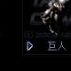

重裝甲地面單位。裝甲優秀但速度偏慢，使用榴彈發射器等重型武器，射程優秀。升級較難。
| 名稱 | 說明 |
|---|---|
| UCD 安瓿 | 治療人類單位 |
| MCD 安瓿 | 治療機械單位 |
| 懸浮 | 不留腳印 |
| 隱形 | 隱形 |
| 機械強化 | 提升移動速度 |
| 名稱 | 技術等級 | 攻擊力 | 射程 | 射速 | 攻擊模式 |
|---|---|---|---|---|---|
| 榴彈發射器 | 1 | 120 | 19.6m | 1.3s | 僅對地 |
| TA 榴彈發射器 | 37 | 163 | 19.6m | 1.3s | 僅對地 |
| 超級機槍 | 132 | 352 | 24.75m | 1.3s | 僅對地 |
資料來源：Ever☆Zone Tistory /113